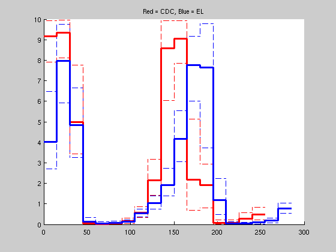

Contents
Double ETA plot
clear all
pwd
ans =
/users/brc/srogers/Research_2006/MMBayes/experiments/fission/doubleSEP/both
Load Data
load 1
Define time
T{1} = [0:15:295];
T{2} = T{1}(1:end-2);
Sort ETA
for i = 1:size(eta,2)
eta(:,i) = sort(eta(:,i));
end
Add path
path(path,'~/Research_2006/MMBayes/matlab_tools');
Warning: Duplicate directory name: /users/brc/srogers/Research_2006/MMBayes/matlab_tools.
Split etas
Q = eta;
clear eta;
eta{1} = Q(:,1:length(T{1})-1);
Q(:,1:length(T{1})-1) = [];
eta{2} = Q;
Plot
close all
title('Red = CDC, Blue = EL');
pwplot(T{1},eta{1}(0.05*size(eta{1},1),:),'b--');
pwplot(T{1},eta{1}(0.95*size(eta{1},1),:),'b--');
pwplot(T{2},eta{2}(0.05*size(eta{2},1),:),'r--');
pwplot(T{2},eta{2}(0.95*size(eta{2},1),:),'r--');
pwplot(T{2},mean(eta{2}),'r','linewidth',3);
pwplot(T{1},mean(eta{1}),'b','linewidth',3);
title('Red = CDC, Blue = EL');
 Display Means and percentiles
EL
Mean
mean(eta{1})'
ans =
4.0224
7.9645
4.8380
0.1362
0.0547
0.0662
0.1264
0.5435
1.0460
1.9283
4.1665
7.7731
7.6470
1.1987
0.0429
0.0352
0.1137
0.1905
0.7754
5th
eta{1}(0.05*size(eta{1},1),:)'
ans =
2.7142
5.9271
3.2463
0.0179
0.0054
0.0094
0.0433
0.3772
0.7472
1.3989
3.0648
6.0184
3.7347
0.4893
0.0026
0.0026
0.0287
0.0839
0.5447
95th
eta{1}(0.95*size(eta{1},1),:)'
ans =
6.4906
9.7408
6.6403
0.3328
0.1329
0.1462
0.2230
0.7560
1.4011
2.7300
5.5458
9.1804
9.7705
2.2251
0.1205
0.0948
0.2201
0.3142
1.0456
CDC
Mean
mean(eta{2})'
ans =
9.1628
9.3506
4.9909
0.0307
0.0278
0.0391
0.1574
0.5678
2.1449
8.5845
9.0587
2.1842
1.9210
0.0705
0.0832
0.2902
0.4948
5th
eta{2}(0.05*size(eta{2},1),:)'
ans =
7.9012
8.1092
3.4348
0.0018
0.0016
0.0027
0.0393
0.3350
1.4233
6.0408
7.8608
0.6848
0.7937
0.0049
0.0065
0.0783
0.2127
95th
eta{2}(0.95*size(eta{2},1),:)'
ans =
9.9347
9.9602
7.7539
0.0906
0.0790
0.1084
0.3175
0.8714
3.1837
9.9193
9.9315
5.1281
2.9253
0.2124
0.2300
0.5654
0.8215